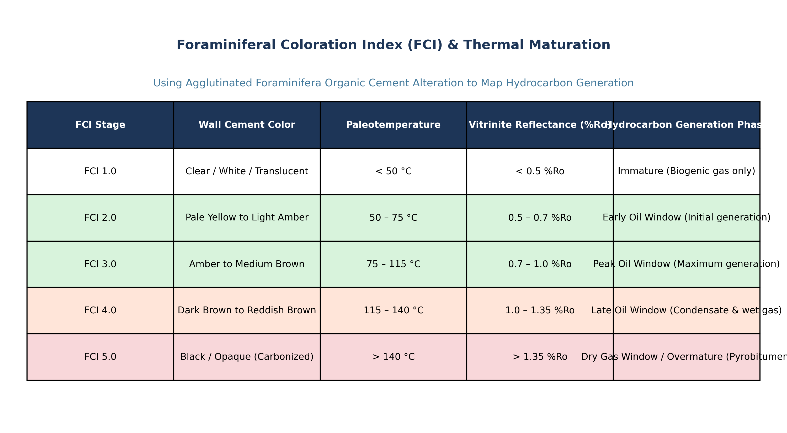

Agglutinated Foraminifera (Suborder Textulariina and Order Astrorhizida) build their multichambered tests by capturing detrital mineral grains (predominantly quartz silt, heavy mineral grains, sponge spicules, or mica flakes) from the ambient seabed and bonding them with a biogenically secreted matrix.
In many primitive and deep-water taxa, this adhesive cement consists of a complex, cross-linked organic matrix composed of ferruginous mucopolysaccharides, glycosaminoglycans, and structural proteins (tectin). When these organisms are buried deeply in subsiding sedimentary basins, this organic cement is subjected to progressive geothermal heating. Under thermal stress, the biopolymer undergoes irreversible carbonization, condensation, dehydration, and aromatization—a process directly analogous to the coalification of plant vitrinite and the thermal alteration of fossil conodonts and spores.

Pioneered by D.H. McNeil (1989, 1997) at the Geological Survey of Canada, the Foraminiferal Colour Alteration Index (FCAI) provides a standardized, calibrated 10-point optical scale that quantifies the thermal maturity of sedimentary successions:
In petroleum exploration, assessing the thermal maturity of source rocks and reservoir seals is the single most critical gating factor determining whether a drill target contains light sweet crude, condensates, dry gas, or barren overmature graphite.
It is essential in economic geology and organic geochemistry to maintain strict distinction between thermal maturity and general diagenesis:
Agglutinated foraminifera utilize organic cements (cross-linked mucopolysaccharides and tectin) to bind detrital sand and silt grains. With increasing burial depth and geothermal heating, these organic cements undergo progressive thermal maturation and carbonization, shifting predictably from clear/amber through dark brown to black and glassy white. This optical progression—quantified as the Foraminiferal Colour Alteration Index (FCAI)—is directly calibrated to Vitrinite Reflectance ($R_o$) to determine the exact thermal maturity and the boundaries of the oil and gas generation windows (Boggs, 2012, p. 524; McNeil, 1997).
Diagenesis is a vast, generic term describing all post-depositional physical, chemical, and biological processes occurring at temperatures below $\sim 150\text{--}200^\circ\text{C}$ (e.g., bioturbation, compaction, dissolution, carbonate cementation). While thermal maturation occurs during deep diagenesis and catagenesis, "diagenesis" itself is neither a specific quantitative metric nor the direct parameter that governs hydrocarbon cracking.
Burial diagenesis specifically focuses on lithification, mechanical compaction, porosity loss, pressure solution (stylolitization), and mineral authigenesis (such as the transformation of smectite to illite via mixed-layer I/S clays). While occurring concurrently with basin burial, it is not the term for the organic thermal state that governs petroleum expulsion.
Kerogen content refers to the quantitative mass percentage of insoluble organic matter preserved in the rock, measured as Total Organic Carbon (TOC wt%) via Rock-Eval pyrolysis or LECO combustion. Foraminiferal color alteration measures the qualitative thermal state (maturity) of the basin, not the quantitative abundance (richness) of kerogen. A rock can have very high kerogen content ($TOC = 15\%$) but be completely thermally immature ($FCAI = 1, R_o = 0.3\%$).
| Maturation Stage | Peak Paleotemp ($^\circ\text{C}$) | Vitrinite Reflectance ($R_o\%$) | FCAI (Foram Colour) | CAI (Conodont Colour) | TAI / SCI (Spore Colour) | Hydrocarbon Product |
|---|---|---|---|---|---|---|
| Immature | $< 60^\circ\text{C}$ | $< 0.50\%$ | FCAI 1 (Clear/White/Pale Yellow) | CAI 1 (Pale Yellow) | TAI 1.0 – 1.5 (Yellow) | Biogenic Methane; Immature kerogen |
| Early Oil Window | $60\text{--}90^\circ\text{C}$ | $0.50\text{--}0.70\%$ | FCAI 2 (Light Amber / Golden) | CAI 1.5 | TAI 2.0 (Orange) | Heavy to Medium Crude Oil |
| Peak Oil Window | $90\text{--}120^\circ\text{C}$ | $0.70\text{--}1.00\%$ | FCAI 3 (Medium Brown) | CAI 2.0 (Brown) | TAI 2.5 – 3.0 (Brown) | Light Sweet Crude Oil |
| Late Oil / Condensate | $120\text{--}150^\circ\text{C}$ | $1.00\text{--}1.35\%$ | FCAI 4 (Dark Brown) | CAI 3.0 (Dark Brown) | TAI 3.5 (Dark Brown) | Wet Gas & Condensate |
| Dry Gas Window | $150\text{--}200^\circ\text{C}$ | $1.35\text{--}2.00\%$ | FCAI 5 (Black / Opaque) | CAI 4.0 – 5.0 (Black) | TAI 4.0 (Black) | Thermal Dry Gas (Methane) |
| Overmature / Barren | $> 200^\circ\text{C}$ | $> 2.00\%$ | FCAI 6–7 (Grey to Glassy White) | CAI 6 – 8 (White/Clear) | TAI 5.0 (Graphitized) | Barren; graphite and $CO_2/N_2$ |
Exploration drilling in a deep-water turbidite basin recovers agglutinated foraminifera with an average FCAI of 3.0 (Peak Oil Window, corresponding to a peak paleotemperature of $105^\circ\text{C}$). If the surface mean temperature is $15^\circ\text{C}$ and the average geothermal gradient is $30^\circ\text{C/km}$, calculate the maximum paleoburial depth of the source interval.
A petroleum geochemist receives cutting samples from a Mesozoic well in which vitrinite particles are absent due to deep marine deposition far from land. Agglutinated foraminifera exhibit an FCAI value of 4.0. Using the empirical relationship $\ln(R_o) \approx 0.35 \times \text{FCAI} - 1.25$, estimate the equivalent vitrinite reflectance ($R_o\%$) and state whether the interval is prone to oil or gas.
The thermal degradation of tectin organic cement in agglutinated foraminiferal walls follows first-order kinetics with an activation energy $E_a = 180\text{ kJ/mol}$ and frequency factor $A = 1.0 \times 10^{14}\text{ s}^{-1}$. Calculate the reaction rate constant $k$ at $T = 100^\circ\text{C}$ (373.15 K). ($R = 8.314\text{ J}\cdot\text{mol}^{-1}\cdot\text{K}^{-1}$).
Explain why an exploration team targeting deep-water turbidites in the Krishna-Godavari deep offshore basin must rely on agglutinated foraminifera and palynomorphs rather than planktic foraminifera to evaluate source rock thermal maturity.
In a deep borehole, a shale bed at 1,500 m yields agglutinated foraminifera with an anomalously high FCAI of 5.0 (Black, $T > 160^\circ\text{C}$), whereas shales at 1,400 m and 1,600 m yield FCAI values of 2.0 ($T \approx 65^\circ\text{C}$). Diagnose the geological cause of this anomaly.
A black shale sample from the Barakar Formation yields a Total Organic Carbon (TOC) of $12.5\text{ wt}\%$ and an FCAI of 1.5. A second shale sample from a fold-and-thrust belt yields a TOC of $1.2\text{ wt}\%$ and an FCAI of 5.5. Contrast their petroleum generation potentials.
How can an exploration geologist identify whether a pale-white agglutinated foraminifer represents a pristine immature specimen (FCAI 1) or a post-mature, metamorphically bleached specimen (FCAI 7)?
Synthesize a cross-plot strategy integrating FCAI, Rock-Eval $T_{\max}$, and Vitrinite Reflectance ($R_o$) to validate oil window boundaries in an offshore wildcat well.